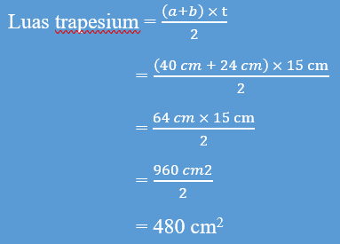

BAB III
Trapesium
Jenis-jenis Trapesium
- Trapesium sama kaki
- Trapesium siku-siku
- Trapesium sembarang
Trapesium terbagi menjadi 3 jenis:
Trapesium sama kaki adalah trapesium yang memiliki kaki atau sisi trapesium yang tidak sejajar sama panjang. Sudut-sudut sisi sejajar (alas) pada trapesium sama kaki sama besar. Trapesium sama kaki memiliki simetri lipat dan kedua diagonalnya sama panjang.

Trapesium siku-siku adalah trapesium yang memiliki sepasang sudut siku-siku. Trapesium jenis ini juga bisa digunakan untuk memperkirakan luas daerah di bawah kurva.

Trapesium sembarang adalah ketika trapesium memiliki sisi dan sudut trapesium yang tidak sama, keempat sisinya memiliki panjang yang berbeda.

Bagian-bagian Trapesium
- AB, BC, CD, DA adalah sisi-sisi trapesium
- a dan b adalah alas-alas sejajar trapesium
- t adalah tinggi trapesium
Perhatikan bagian-bagian trapesium berikut:

Sifat-sifat Trapesium
- Terdapat 4 rusuk dan 4 titik siku.
- Memiliki sepasang sisi sejajar.
- Salah satu kakinya tegak lurus (trapesium siku-siku) terhadap sisi sejajarnya.
- Jumlah sudutnya berdekatan 180°.
- Hanya memiliki 1 simetri putar saja.
Keliling Trapesium

Keliling = panjang AB + panjang BC + panjang CD + panjang DA
K = sisi + sisi + sisi + sisi
K = a + b + c + d
Contoh:
Tentukan keliling trapesium berikut.

Jawab:
Diketahui: a = 9 cm, b = 15 cm, c = 4 cm, dan d = 15 cm
Keliling trapesium = a + b + c + d
= 9 + 15 + 4 + 15
= 43 cm
Jadi, keliling trapesium tersebut adalah 43 cm.
Luas Trapesium
 |
 |
|---|
Contoh:
Hitunglah luas trapesium ABCD pada gambar berikut:

Jawab:
Diketahui: a = 8 cm, b = 4 cm, dan t = 6 cm

Jadi, luas trapesium ABCD adalah 36 cm2.
Pemecahan Masalah yang Berkaitan dengan Luas Trapesium
Budi mencat papan nama yang berbentuk trapesium. Panjang sisi papan nama yang sejajar 40 cm dan 24 cm. Tinggi trapesium 15 cm.
Hitunglah luas permukaan papan nama yang dicat!
Diketahui: a = 40 cm, b = 24 cm, dan t = 15 cm
Ditanya: luas permukaan papan nama yang di cat
Jawab:
Jadi, luas permukaan papan nama yang di cat oleh budi adalah 480 cm2.
| Rangkuman |
|---|
|
Latihan Soal
- Pertanyaan
- Diketahui sebuah trapesium sama kaki memiliki panjang sisi sejajar 15 cm dan 10 cm, panjang dua sisi lainnya adalah 10 cm dan 8 cm. Berapakah keliling trapesium tersebut?
- Hitunglah luas trapesium berikut.
- Jawaban
Diketahui: a = 15 cm, b = 10 cm, c = 10 cm, dan d = 8 cm
- Diketahui: a = 12 cm, b = 8 cm, t = 10 cm

Ditanya: Keliling trapesium?
Jawab:
Keliling trapesium = a + b + c + d
= 15 + 10 + 10 + 8
= 43 cm
Jadi, keliling trapesium tersebut adalah 43 cm.
Ditanya: Luas Trapesium?
Jawab:

Jadi, luas trapesium tersebut adalah 28 cm2.
Evaluasi
- Sebuah trapesium mempunyai panjang sisi AB = 2 cm, BC = 7 cm, CD = 9 cm, dan DA = 8 cm. Berapakah keliling trapesium tersebut?
- Sebuah trapesium dengan panjang sisi OP = 32 cm, PQ = 27 cm, QR = 19 cm, dan RP = 18 cm. berapakah keliling trapesium tersebut?
- Luas trapesium berikut adalah…
- Jika diketahui luas sebuah trapesium adalah 640 cm2. Dan juga diketahui tinggi trapesium 16 cm dan panjang salah satu sisi sejajar 28 cm. Berapa panjang sisi sejajar yang satunya lagi?
- Selembar kertas berbentuk trapesium dengan ukuran sisi-sisi yang sejajar 24 cm dan 16 cm. Luas trapesium tersebut adalah 400 cm2. Tingginya adalah ....

Jika masih belum mengerti cara menghitung keliling dan luas trapesium, kalian bisa menonton video youtube dibawah ini.